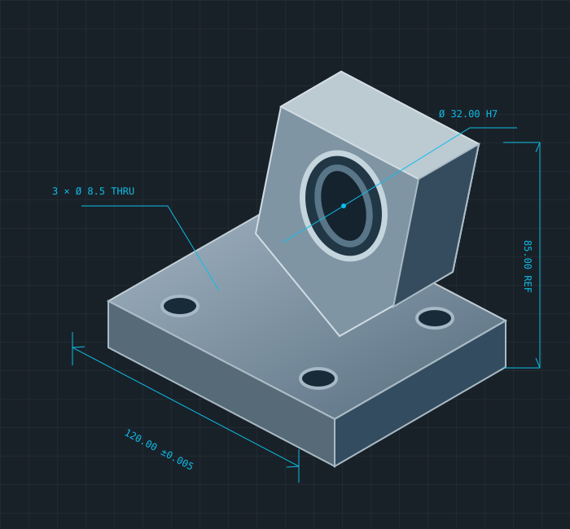

CNC Milling
3, 4 and 5-axis. Nominal process envelope 1200 × 600 × 500mm. Simultaneous 5-axis subject to geometry and setup.
CONTRACT MANUFACTURING / TECHNICAL DEMONSTRATOR
Precision CNC machining & fabrication.
From the first prototype to the next production run.
Fictional Coventry shop. Tolerances, machinery and lead times below are sample brief specifications, subject to engineering review. No certified production capability is asserted.

01 / CAPABILITY MATRIX
Select a cell for sample process limits.
All entries are illustrative, not confirmed production offers.
● Standard sample○ On request— Not offered in sample
SAMPLE MACHINING TARGET
× 500MM NOMINAL PROCESS ENVELOPE
EQUIPMENT ENTRIES IN BRIEF
ILLUSTRATIVE LEAD TIME, NOT A COMMITMENT
02 / PROCESSES
3, 4 and 5-axis. Nominal process envelope 1200 × 600 × 500mm. Simultaneous 5-axis subject to geometry and setup.
Up to Ø350mm × 900mm between centres. Live tooling and sub-spindle options in the sample list.
400 × 300 × 250mm. Sample positional target ±0.003mm for suitable conductive materials and profiles.
600 × 300mm table. Sample Ra 0.2 finish target; flatness and inspection criteria require agreement.
Laser to 12mm mild steel. Press brake to 3m. TIG/MIG requirements and qualifications require verification.
Kitting, mechanical assembly, helicoil insertion and packing to an agreed customer specification.
03 / QUALITY & DOCUMENTATION
Define what needs proving before a part is made. Inspection scope, material traceability and first article documentation belong in the enquiry, not in a follow-up.
No certificates, audit records, ITAR registration or UKAS calibration have been verified for this fictional business. Certificate numbers from the brief are not displayed as credentials.
ISO 9001:2015 and AS9100 Rev D, with a stated March 2026 audit, are fictional brief content only. Obtain current certificates, scope and issuer verification from a real supplier.
Zeiss Contura G2 CMM, 700 × 1000 × 600mm; Mitutoyo Crysta-Apex S574; Keyence IM-8000 optical measurement. Availability and calibration are unverified.
The brief proposes AS9102 First Article Inspection Reports for new part numbers. Agree revision, sampling, traceability, reporting and any charges in the actual order. No report is supplied by this demo.
04 / SECTOR CONSTRAINTS
Flowdown requirements. Material traceability. Document control.
Process validation. Packing requirements. Controlled changes.
Drawing revisions. Realistic deadlines. Clear priority planning.
Repeat batches. Call-off schedules. Consistent inspection.
Setup can dominate the cost of small batches. The brief covers one-off prototypes through 10,000 parts; ask for quantity breaks to compare options. No automated price or production capacity is promised here.
05 / EQUIPMENT REGISTER
All 14 entries are sample brief data. Machine travel is not a guaranteed part envelope; fixtures, tooling and geometry reduce usable capacity.
No equipment matches. Clear the search to see all 14 entries.
06 / A USEFUL FIRST ENQUIRY
Local planner only. Files are not read or uploaded; only the filename and size are inspected. No NDA, confidentiality protection, quote or supplier relationship is established. Use no confidential drawings.